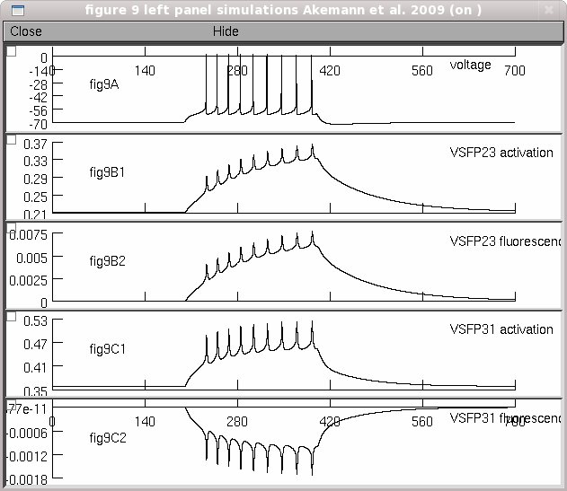

This is the readme.txt for the model associated with the paper: Walther Akemann, Alicia Lundby, Hiroki Mutoh, Thomas Knopfel. Effect of voltage sensitive fluorescent proteins on neuronal excitability. Biophys. J. 2009; 96: 3959-3976 These model files were contributed by Walther Akemann and Thomas Knopfel. The files contain the descriptor files for active conductances in a monocompartment Purkinje cell model. Ion channel gating currents (igate) are calculated from the first derivative of the state dynamics. Two voltage-sensitive fluorescent proteins, VSFP2.3 and VSFP3.1, are modeled with a 8-state reaction (refered to as Model III in the paper) to represent the sensing and fluorescence dynamics of these proteins. To reproduce the simulations shown in Fig. 9 (left panel). Simply auto-launch from ModelDB (after NEURON is installed) or download and extract the archive (a new folder is created), then compile the mod files (and start) under Linux: ------ by executing "nrnivmodl" in the expanded folder. Then type "nrngui mosinit.hoc". mswin: ------ by running mknrndll (select the new folder). Then in Windows Explorer double click on the mosinit.hoc file MAC OS X: --------- by dragging and dropping the new folder onto the mknrndll icon. Drag and drop the mosinit.hoc file onto the nrngui icon. Once the simulation has loaded: ------------------------------- Press "Start". The simulation takes a little under 30 seconds on a 2.8 GhZ Pentium 4. The simulations from the left panel of figure 9 appears: 